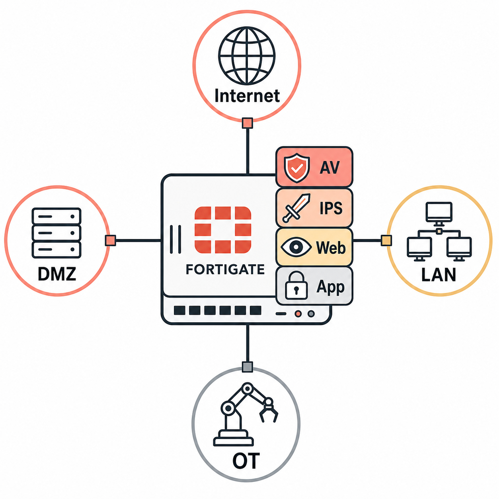

Overview
A FortiGate is more than a stateful firewall. Traditional stateful firewalls track TCP sessions and enforce permit/deny rules based on IP addresses and ports — they operate at Layer 3 and Layer 4 of the OSI model. FortiGate extends this with deep packet inspection capabilities that operate up through Layer 7: it can identify the application generating traffic regardless of the port it uses, scan file transfers for malware signatures, match URLs against threat intelligence databases, and detect known exploit patterns in network streams.
These capabilities are delivered through security profiles — discrete inspection engines that attach to firewall policies. An Antivirus profile scans content for malware. An Intrusion Prevention System (IPS) profile matches traffic against signatures for known exploits and attack patterns. A Web Filter profile evaluates URLs and categories. An Application Control profile identifies and enforces rules on applications by their traffic signatures. Each profile layer adds depth; together they constitute what the industry calls a next-generation firewall (NGFW).
Fortinet surrounds the firewall with a broader ecosystem. FortiGuard is Fortinet's threat intelligence subscription service — it delivers updated signatures, URL categories, and botnet feeds to FortiGate continuously. FortiAnalyzer aggregates logs for analysis and compliance reporting. FortiManager centralizes policy management across multiple FortiGates. And the Security Fabric is Fortinet's architecture for connecting these products so they share telemetry and can respond to threats collaboratively. Understanding how these pieces fit together is the foundation of the NSE7 Enterprise Firewall track.

Flat illustration of an enterprise firewall solution
Target Questions
These are the questions your Socratic session will explore. Read them before you start — they tell you what understanding to look for while reviewing the study guide.
- 1What distinguishes a FortiGate NGFW from a traditional stateful firewall — what can it inspect that a stateful firewall cannot?
- 2What are the key security profiles that FortiGate applies as a NGFW, and at which OSI layers do they operate?
- 3What is FortiGuard and which services does a FortiGuard subscription provide to a FortiGate?
- 4How does FortiGate integrate with FortiAnalyzer and FortiManager in an enterprise deployment?
- 5What is the Security Fabric at a high level and which Fortinet products can join it?
- 6Why would a company choose FortiGate over a simple firewall for branch office protection?
- 7What is the difference between a "flow-based" and "proxy-based" inspection mode?